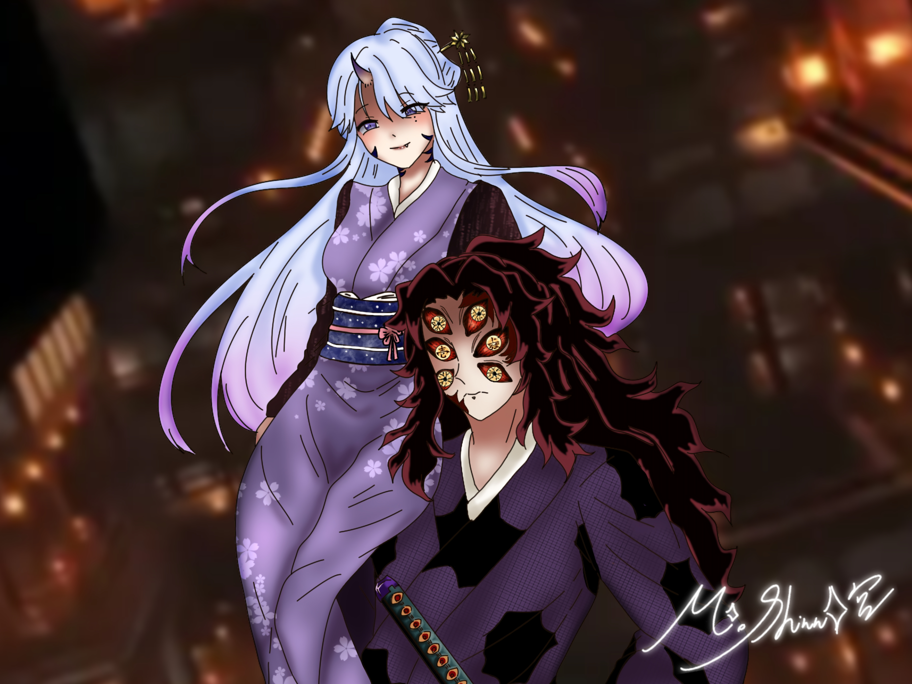
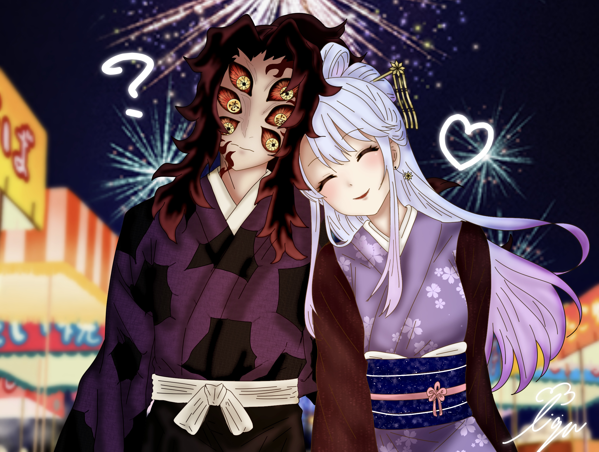

✶
MIO DREAM NOTE
篠宮澪｜夢向專屬小宇宙
--- ✶選單✶ ---
首頁
人設
能力
澪的衣帽間
夢圖專區
主線故事
關係年表
夢圖專區
有發過的夢圖都會出現在這
如果沒有就是我還沒更新＞＜
🔍
全部
非委託
委託
百日
非委託
Day100
櫻花
澪×黑死牟｜百日賀
放大檢視

默許
非委託
Day99
姿勢
澪×黑死牟｜她坐於肩上·上弦之壹的默許
放大檢視

祭
非委託
Day98
依靠
澪×黑死牟｜祭典中的依偎
放大檢視
あの人を嫁にしたい
非委託
事後感
澪×黑死牟｜ あの人を嫁にしたい
放大檢視
小動物貼貼
委託
小動物
澪×黑死牟｜ 小動物貼貼
放大檢視
×
標題